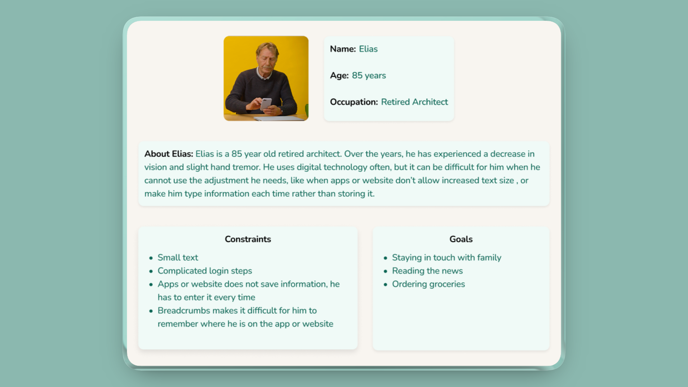
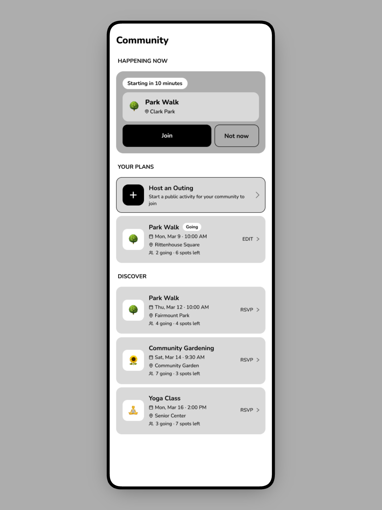
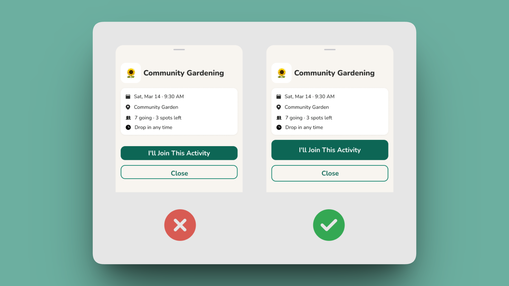

ElderMotion
Designing an accessibility-first fitness companion for older adults.
Accessible from the first sketch, not the last settings menu. Built for Elias: 85, low vision, a tremor, and no patience for apps that don't remember him.

Built for people who don't call themselves athletes
Most fitness apps are built for people who already think of themselves as athletes. ElderMotion is built for people who don't. Specifically, it's for older adults navigating vision loss, hand tremors, and unfamiliar interfaces who still want to garden, walk to the market, and see their neighbors.
We grounded the whole project in a real W3C accessibility persona instead of inventing one, and we built every interface decision off findings from HCI and DIX literature: touch target size, navigation pattern, language, and notification tone.
I led the literature review, which included a critical read of where the source studies' own evidence had limits. I owned the app's full information architecture, and I designed the Community flow end to end.
- Grounded in the W3C persona “Elias,” not an invented user
- 5 papers reviewed across HCI, UX, and DIX, each read critically for its own limitations
- High-fidelity prototype with a working Figma click-through, including a dedicated high-contrast / dark mode
Two barriers, stacked on top of each other
Older adults adopting mobile health technology face two barriers stacked on top of each other: age-related physical impairment (vision loss, tremors) and low digital literacy. Most fitness apps address neither. They're built around complex data visualization and a fitness-culture aesthetic that assumes the user already sees themselves as athletic.
We grounded this in Elias, the W3C's own standardized accessibility persona. He's an 85-year-old retired architect with low vision and a hand tremor, someone who uses technology often but gets stopped cold by apps that won't let him increase text size, or that make him re-enter information every time because nothing is remembered.
The tech doesn't fail because older adults can't use it. It fails because it doesn't speak their language.
…help someone like Elias build physical activity into daily life, not as a workout but as an extension of things he already does, without ever asking him to fight the interface to get there?
A note on framing: the “double burden” above is a synthesis I pulled together while leading the literature review. It isn't a direct quote from any one paper, but the pattern that showed up once I'd read all five side by side.
Five papers, read for their limits
We reviewed five papers spanning HCI, UX, and DIX research on older adults and mobile health technology, and grounded every finding against Elias rather than a persona we invented ourselves.
This was secondary research, a literature review rather than primary user testing. We didn't talk to older adults directly for this project. Every design decision below is a strong, evidence-backed hypothesis rather than a validated one; the Validation section covers what that means going forward.
The key insight: every paper pointed at the same root cause from a different angle. The barrier isn't capability, it's design that assumes the wrong user. Small buttons assume steady hands. Swipe gestures assume fine motor control. “Cardio session” assumes someone who already calls themselves active. Fix the assumption, and a lot of the “accessibility problem” disappears.
What makes the differentiator real: I didn't just extract findings. I read each study for where its own evidence had limits, and let that shape how much weight each finding actually deserved. That critical read is the traceability chart below.
What we built off it: two-finger-width tap targets with dead space around every button, single-tap-only navigation, activity language reframed around daily life (“garden time,” not “cardio”), and supportive rather than demanding notification copy.
From findings to requirements
We translated every research finding into a concrete functional requirement, organized into four categories.
- —Two-finger-width targets
- —Gesture-free single-tap navigation
- —A 3-option ceiling per screen
- —Text labels on every icon
- —Everyday-life activity language
- —Supportive, not urgent, notifications
- —Milestone tracking over data charts
- —High-contrast mode & adjustable fonts that don't break layout
- —Text-to-speech
- —Large undo / confirm states
- —Local activity discovery
- —Scheduling walks & outings with neighbors

Information architecture, my ownership
I designed the app's full IA. Three decisions mattered most, all built over a card-based home hub with four primary branches, laid out here as a vertical indented tree.
Primary actions live as home-screen cards ordered by frequency of use, rather than a bottom nav or sidebar. Fewer things to scan, larger tap targets.
Users stay signed in by default. One less place a low-vision user can get stuck or locked out.
Every screen caps its choices, to keep cognitive load down for a user managing mild memory lapses.
Where the research becomes visible
Every major UI choice on the screens below traces back to a specific finding rather than a style preference. My flow: Community. It's the app's answer to isolation: instead of tracking numbers, it surfaces a real person doing something nearby right now, and makes joining a single tap.

Community began as a grayscale wireframe: structure and hierarchy first, before any color or type. Locking the layout at low fidelity kept the two-choice actions, plain-language cards, and single-tap targets from getting lost once the visual layer went on.
Social presence at the top; a real person is out now. Motivation via community, not streak guilt.
McCaskey et al.: isolation and adherence
Join or Not now, no third path to weigh. Both large, single-tap, two-finger-width tall.
Bailey et al.: motor tolerance, 3-option ceiling
Users create outings, not only join them; agency over passive consumption fights self-isolation.
Napetschnig: group activity, social connectivity
“Park Walk,” “Gardening,” everyday terms, not “cardio session.” Icon plus text label on every card.
Daniels et al.: purposeful-living reframing
“3 spots left” invites without nagging; informational, never a countdown to guilt.
Daniels et al.: non-punitive prompts
Numbered pins mark the five decisions I owned as Community flow lead.

The primary action gets a solid, high-contrast fill; the secondary stays a quiet outline. For a low-vision user, an ambiguous pair of equally-weighted buttons is a failure state. The shipped version makes “I'll join” unmistakable at a glance.
What we didn't test, and why that matters
We didn't run a formal usability study on this project. The honest limitation is that our research population itself skewed toward sedentary, higher-need seniors.
Most of the source literature centered on older adults who were already inactive or had pronounced special needs. ElderMotion is well-tuned for someone like Elias, but may under-serve a more active older adult who'd want a bigger challenge than “garden time.” That's a real gap, not a footnote. Noticing this was part of the same critical read I did on the source studies; the sample-bias question doesn't stop at the literature, it carries into what we built from it.
What that means going forward: usability testing with actual older adults is the explicit next step, not a someday-maybe. Everything here is a strong first hypothesis, not a validated one.
A prototype grounded in evidence
A high-fidelity, working prototype grounded in real accessibility research rather than assumption. It covers a home dashboard, activity tracking, community discovery, and a full high-contrast / dark mode, all traceable back to a specific finding in the literature.
The lesson I'd flag first: each of the four of us owned a separate flow and built somewhat in parallel, which meant visual style drifted. Corner radii, contrast levels, and button shapes diverged. I put together a lightweight shared component set to pull it back together, and it helped, but only partially, because it arrived after the drift had already happened rather than before it.
Different background, corner radius, and bar colour per teammate. Divergence, baked in from day one.
Corner radii, contrast levels, button shapes, and card padding diverged. Nothing was technically wrong, but the four flows didn't read as one product.
One shared card, nav, and toggle set. Every flow now on identical dimensions and treatment.
A shared card, nav, and accessibility-toggle set, built after the flows, so it only partly reconciled them.
Establish shared components and tokens before parallel work begins, not after.
A retrofitted system can only patch drift that's already happened. A shared foundation prevents it in the first place. This is the single biggest process lesson I took from ElderMotion.
- Usability testing with real older adults
- Dedicated help & support entry points
- Voice-assisted guidance
- Refining the interface from real user feedback, not literature alone